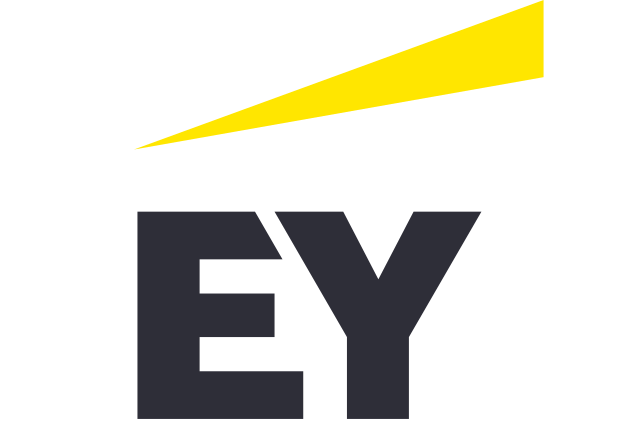

Selected work · 2024—2026
Selectedprojects.
AI, cybersecurity and product engineering — built from the architecture out.
Kotlin Spring Boot React TypeScript Python OpenAI LangChain FastAPI ChromaDB PostgreSQL Docker Jetpack Compose
AI infrastructure · 2026
EvoLabas a Service
Evolutionary AI experiments, transformed into a reliable multi-user platform.
Queued workloads Container workers OAuth 2.0
Open case study ↗
Worker pool Active
Queue 04 jobs
01 / System architecture EvoLab as a Service
Experience React + TypeScript Vite · Framer Motion
→
Delivery Nginx HTTPS · Reverse proxy
→
Core API Kotlin + Spring REST · OAuth · BCrypt
State PostgreSQL JDBI · AES-256
Execution Docker workers Queue → OpenEvolve
Image Architecture
OpenEvolve companion · 2026
EvoLabChatbot
The conversational layer of OpenEvolve, bringing project knowledge directly into the platform.
RAG LangChain ChromaDB FastAPI
Open repository ↗
RAG online
01 Project knowledge02 ChromaDB03 LangChain04 OpenEvolve
Context Retrieved
02 / RAG pipeline EvoLab Chatbot Knowledge Documents → Chunks → Embeddings → ChromaDB
Answer User query → Similarity → Context → Gemini
Python · FastAPI · LangChain Deployed on Google Cloud Platform
Image Architecture
Distributed product · 2025
PokerDice
One real-time game architecture, expressed across web and native Android.
Spring Boot React Jetpack Compose
03 / Real-time product Poker Dice Web React + TypeScript
Android Jetpack Compose
REST Server-Sent Events Live state
Concurrent game engine Kotlin + Spring Boot Sessions · turns · events
PostgreSQL JDBI persistence
Image Architecture
AI × Cybersecurity · 2026
VeridictAI
Explainable risk intelligence for suspicious links, phishing and smishing.
Local AI Live reputation Privacy first
Open case study ↗
01 02 03
Assessment Explainable
04 / Security architecture Veridict AI URL / message ↓
35% Rules Patterns · urgency
35% Reputation DNS · WHOIS · Safe Browsing
30% AI Local LLM · RAG
Weighted assessment Explainable risk score
Image Architecture
Scroll to change project ↓
01 / Platform architecture 18 / 20
EvoLab as a Service
A multi-user platform around OpenEvolve that turns LLM-driven algorithm evolution into a configurable, observable product. Users can connect OpenAI, Gemini, Anthropic or local models, upload evaluators, launch isolated experiments and follow fitness, checkpoints and best solutions. Google OAuth, BCrypt password hashing and encrypted provider credentials protect the workspace.
React 19 TypeScript Kotlin Spring Boot PostgreSQL Docker OAuth 2.0
↗ Hover to inspect System architecture
Experience React + TypeScript Vite · Framer Motion
HTTPS Delivery Nginx Reverse proxy
REST Core API Kotlin + Spring REST · OAuth 2.0 · BCrypt
State PostgreSQL JDBI · AES-256
Execution Docker workers Queue → OpenEvolve
View repository ↗
02 / RAG pipeline Google Cloud
EvoLab Chatbot
A deployable FastAPI service and embedded chat experience that grounds Gemini responses in project documentation. Retrieval happens before generation, so answers arrive with the most relevant EvoLab context instead of relying on model memory.
Python FastAPI LangChain Gemini ChromaDB Docker
↗ Hover to inspect RAG architecture
Knowledge preparation
01 Documents Loader
→
02 Chunks Split
→
03 Embeddings Gemini
→
04 ChromaDB Vectors
Answer flow
01 User query Widget
→
02 Similarity Search
→
03 Context Retrieved
→
04 Answer LangChain
Containerized API Deployed on Google Cloud Platform
View repository ↗
03 / Real-time product Web + Android
Poker Dice
A shared multiplayer backend serving two purpose-built clients. The React web app and native Jetpack Compose app consume the same REST API, while Server-Sent Events keep concurrent game rooms synchronized in real time.
Kotlin Spring Boot React TypeScript Jetpack Compose PostgreSQL
↗ Hover to inspect Web + mobile architecture
Web client React + TypeScript Browser
Native client Jetpack Compose Android Studio
REST + SSE
Concurrent game engine Kotlin + Spring Boot Sessions · turns · live events
PostgreSQL JDBI persistence
04 / Security experiment In evolution
Veridict AI
An experimental phishing and smishing assessment platform. It combines deterministic signals, live domain reputation and local AI reasoning to produce an explainable risk score — a fast prototype with a clear path to stronger models and evaluation.
Python Rules Safe Browsing WHOIS ChromaDB Local LLM
↗ Hover to inspect Risk scoring architecture
URL / message↓
35% Rules Patterns · urgency · typosquatting
35% Reputation DNS · WHOIS · Safe Browsing
30% AI Local LLM · RAG · explanation
Weighted assessment Explainable risk score 0 100
View repository ↗
Experience
One month became
A summer project in AI and cybersecurity became the starting point for my current work in consulting.

EY AI & Data Consulting
EY
Aug 2026 Summer Intern Sep 2026 Assistant Now AI & Data Consulting
01 / 02
August 2026 — 4 September 2026
Summer InternAI & Data Consulting
Designed an AI agent to map a company's external attack surface by orchestrating discovery, crawling, vulnerability scanning and structured analysis.
01 Discover02 Crawl03 Scan04 Reason
OWASP Amass Katana Crawl4AI Tavily Nuclei Nikto
02 / 02
September 2026 — Present
AssistantAI & Data Consulting
Now contributing to consulting work while pursuing my Master's, with a clear focus on responsible, secure and useful AI systems.
Artificial Intelligence Data Responsible AI
AI SECURITY SYSTEMS
Education
Deepening thetechnical foundation.
Now
Master of ScienceComputer Engineering
Specialization in Artificial Intelligence
September 2026 — Present
Bachelor of EngineeringComputer Science and
Selected coursework
Artificial Intelligence 18 Project & Seminar 18 Concurrent Programming 17 Programming 17 Cybersecurity 16
September 2023 — 2026
EY
01 / Applied AI Credential
EY AI
Applied problem-solving at the intersection of AI, professional services and real-world delivery.
02 / Agent systems Foundation
Introduction to
Foundational work with graph-based agent workflows, stateful orchestration and Python.
Next / In progress Continuous
Always
This rail is designed to grow as new certifications and specialist credentials are completed.
New credentials will appear here
AI × SEC × SYS
André Vaz Lisbon · PT
About / Philosophy
I care about what happensbefore the first line of code.
Good systems begin with the right questions: what are we solving, where can it fail, and how should the pieces work together?
That is why I am drawn to AI, cybersecurity and architecture — three ways of turning complexity into something dependable.
01 Think in systems02 Design for trust03 Learn by building
Artificial Intelligence ✦ Cybersecurity ✦ System Architecture ✦ Full-stack Engineering ✦ Artificial Intelligence ✦ Cybersecurity ✦ System Architecture ✦ Full-stack Engineering ✦
01 Intelligent systems LangChain · LangGraph · RAG · ChromaDB · Local LLMs · FastAPI
On hover / Focus Agent orchestration Retrieval pipelines Model evaluation
02 Product engineering Kotlin · Python · TypeScript · JavaScript · React · Spring Boot
On hover / Focus Layered APIs Real-time state Web + mobile clients
03 Data & infrastructure PostgreSQL · MongoDB · Docker · Nginx · OAuth 2.0 · OpenID
On hover / Focus Relational modelling Container delivery Identity & secrets